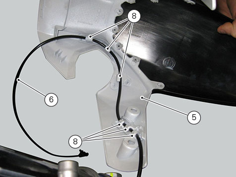
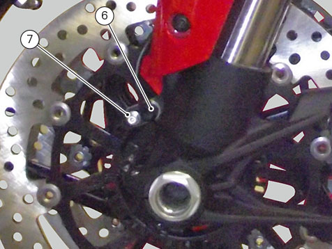
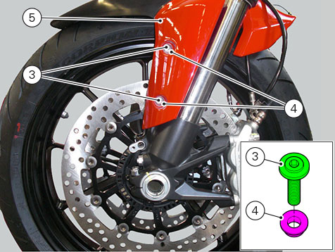
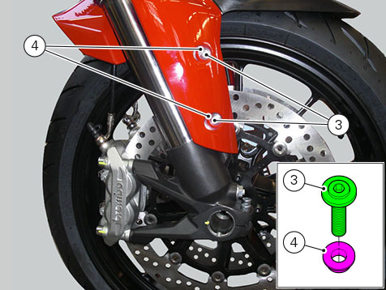
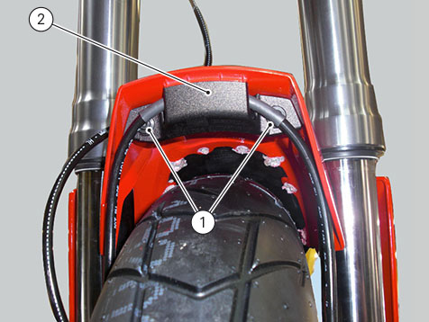

Refitting the front mudguard
Warning
Do not ride the motorcycle if the front mudguard is not in place, or the brake line could interfere with the wheel under braking.
Fasten front speed sensor cable (6) to slots (8) on mudguard (5).

Tighten ABS sensor (6) screw (7) to a torque of 10 Nm ± 10%.

Fit the front mudguard (5), start screws (3) with spacers (4), positioned as shown in the figure.


Refit the hose grommet (2) and insert the screws (1).
Tighten the screws (3) to a torque of 5 Nm ± 10% and the screws (1) to a torque of 3.5 Nm ± 10%.
